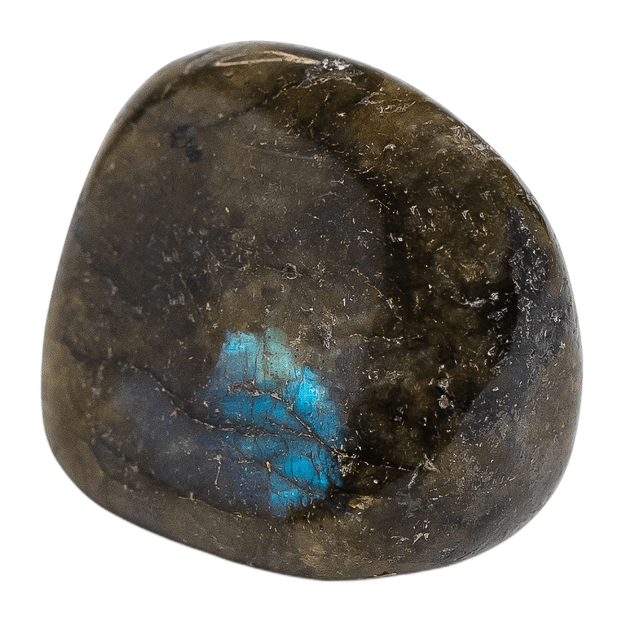

Energy, made personal.
Choose your energy. Live in it.



Choose your energy. Live in it.
Energy is invisible — which is exactly why it's so easy to overlook.
Boundaries · grounded confidence
Shop protectionMomentum · opportunity
Shop abundanceHeart-opening · connection
Shop loveSteadiness · nervous-system ease
Shop calmFocus · intuition
Shop clarityChoose your energy. Live in it.
